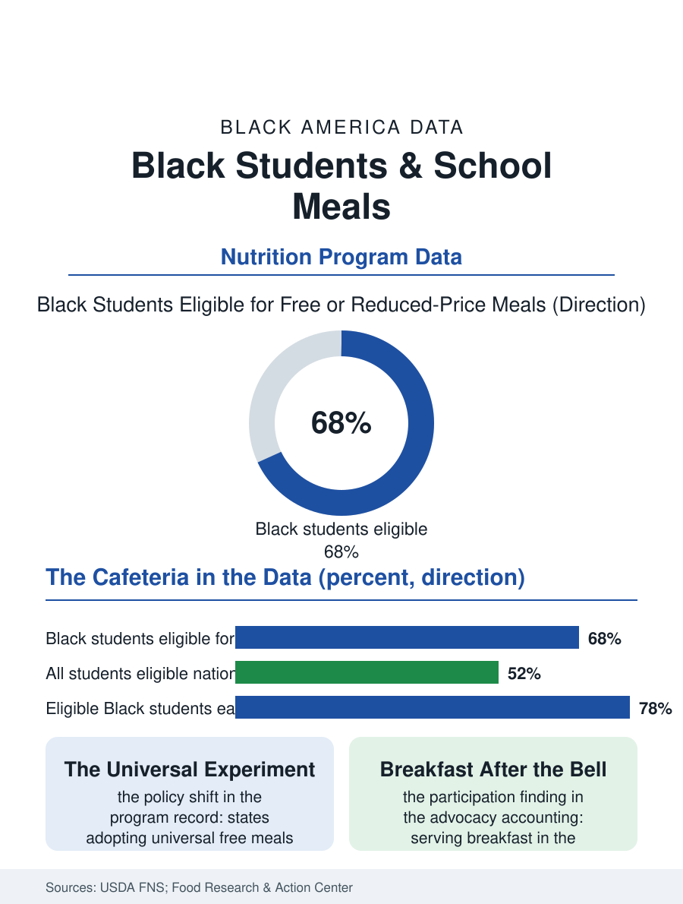

Black Education
The Cafeteria Line: School Meals and the Black Student
School meals are the largest nutrition program in Black children's lives, and eligibility, participation, and the universal-meals experiment all register in the federal counts. The cafeteria file.

The largest restaurant chain in most Black children's lives is their school cafeteria. The National School Lunch Program serves tens of millions of meals a day, and because eligibility follows family income, its rolls are a precise map of child poverty in America, a map on which Black students appear at rates well above their share of enrollment. This article reads the cafeteria file: who is eligible, who actually eats, and what changed when some states stopped asking families to prove they were poor.
Eligibility and the Map of Need
Federal rules set free meals at households up to 130 percent of the poverty line and reduced-price meals up to 185 percent, and by that arithmetic roughly two-thirds or more of Black public school students qualify in a typical year, against about half of all students nationally. The share runs higher in the South and in city districts, lower in affluent suburbs, tracing the income data in the census files of this atlas almost exactly. Eligibility, though, is not participation. The application itself filters: forms sent home in backpacks, income documented in households paid in cash or across multiple jobs, immigrant and mixed-status families weighing any federal form carefully. The Food Research & Action Center's annual reports track the result as a standing gap between the children the program certifies and the children it feeds, a gap concentrated among the older students, for whom the cafeteria line carries a social price the data record as declining participation through high school even as need stays constant.
The Universal-Meals Turn
The structural answer that spread through the program in the last decade is the Community Eligibility Provision, which lets high-poverty schools serve every student free and bill the government on a formula instead of a stack of applications. Under community eligibility the application disappears, the stigma line disappears with it, and participation rises, most sharply at breakfast. A second wave of states went further and funded universal meals for every public school student regardless of district income, converting lunch from a welfare transaction into a school supply, like textbooks. The participation data from adopting states show the predicted pattern: more meals served, a larger rise among students who had been eligible all along but unfiled, and administrative savings from the vanished paperwork. Nutrition standards ride along: federal rules govern sodium, whole grains, and milk, and the research literature on the standards finds the school meal is, for many low-income children, the most nutritionally complete meal of the day, which reframes the cafeteria as health infrastructure as much as education infrastructure.
Breakfast, the Quiet Half
If lunch is the program's giant, breakfast is its underachiever: nationally, only a fraction of the children who eat school lunch eat school breakfast, and the barrier is the clock. Breakfast served before the bell requires an early bus, an early arrival, and a child willing to eat in a cafeteria at dawn; the students most likely to need it are the least likely to clear that obstacle course. The fix documented across district evaluations is logistical, not culinary: breakfast after the bell, served in the classroom during the first minutes of the day, grab-and-go carts at the entrance, second-chance breakfast between periods. Districts adopting the models report participation among low-income students rising by half or more, with teachers in the evaluations reporting calmer first periods and nurses reporting fewer morning stomach-ache visits, the small change with the long shadow. For Black students, who sit at the intersection of the eligibility map and the transportation map, the breakfast file may be the highest-yield page in the cafeteria record: the meal was already funded, already cooked, already counted. It only had to be served when the children were actually there.
The summer completes the file's geography of need. When school closes, the cafeteria closes with it, and the summer feeding programs that replace it reach only a fraction of the children the school-year program serves, a ratio the advocacy accounting publishes annually at roughly one summer participant for every seven school-year participants among low-income children. Black children, concentrated in the districts where summer sites are sparsest and transportation thinnest, sit at the sharp end of that ratio. The newer federal answer, a permanent summer grocery benefit for eligible families, was designed against exactly this arithmetic, putting the meal money on a card rather than at a site a child must reach. Whether it is funded and adopted state by state is the live question in the current program record, and the cafeteria file will be read again each June, when the largest restaurant in Black children's lives locks its doors for the season and the map of who eats is redrawn by whoever shows up to feed them.
More in Black Education
Black Educational Attainment: High School Parity, the College Gap
About 89 percent of Black adults hold a high school diploma and one in four holds a bachelor's degree or higher — the attainment ladder, the college completion gap, and the generational trend.
Historically Black Colleges and Universities: Enrollment and Degrees
More than 100 HBCUs enroll roughly 290,000 students and award about one in six Black bachelor's degrees — an outsized share from a small sector. The federal education data.
Black College Enrollment: 2.4 Million Students
About 2.4 million Black students are enrolled in American colleges — nearly two-thirds of them women. The NCES enrollment data by sector, level, and trend.
Source: U.S. Department of Agriculture, Food and Nutrition Service program data; Food Research & Action Center annual school meals reports.